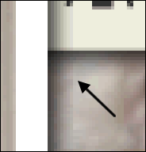
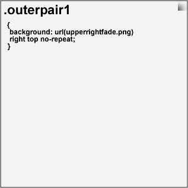
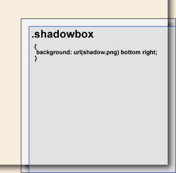
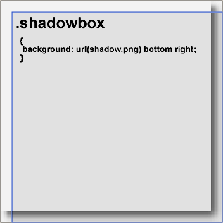
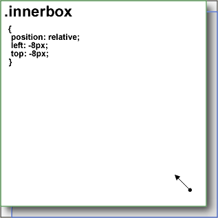
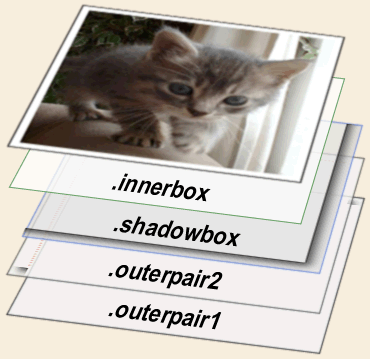
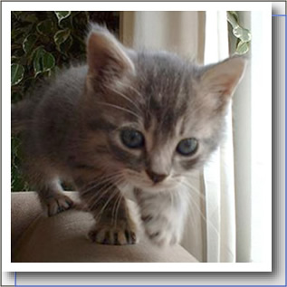

Are complex CSS issues making your programmers crazy?
I've provided advanced CSS consulting for
Milo  and many other big sites.
and many other big sites.
Hire me to help you too.
Big John's CSS Webinars!
Let Big John (yours truly) teach you about CSS in a setting where you can actually ask questions. Will wonders never cease? Learn about the cascade and its arcane mysteries, or dive into the cesspool of IE6 with Big John as your lifeguard.
Besides upcoming webinar dates, you can also download recorded versions of previous webinars (some free, some for sale).
Return to Articles.
Return to p.i.e.
This article is largely obsolete due to an
improved method that covers all sides of a box and needs
only one shadow image to work. However, some may prefer this method or have already implemented
it, so this article will remain for the time being.
Special Notice: I've written a
tutorial for making drop shadows, using the free Gimp
graphics editor. Enjoy!
This article will describe a modification to existing drop shadow methods, employing semi-transparent .png's. Therefore the method is meant for use in in IE7 and the other modern browsers, but not in IE6 and below, which do not correctly display such .png's. IE/Mac can display .png's correctly but will have trouble with the CSS used in the method. We have a minimal demo page available, complete with helpful tips in the source comments.
Browser Support
The PNG Drop Shadow method works in Gecko browsers, Opera, Safari, and IE7. It is made to degrade gracefully to a basic box without dropshadows in earlier IE versions, since those browsers don't support the partially transparent .png's used in the method. IE/Mac does not support the method at all, due to the lack of widths on some floated or positioned elements, and also because of the relative shifting effects used. The IE Machack may be used to dumb down the code in a way similar to the IE6 dumb-down technique.
What Has Gone Before
Say what you want about drop shadows, they are everywhere on the web and in print, and for good reason. There's just no other way to get a three-dimensional effect without making page elements physically move around. Such shadows might be placed on any sides of a box, but the common usage is to have them on the right and bottom edges, and we will confine ourselves to that convention.
There have been a lot of methods developed to display drop shadows, and all the early ones made use of tables. These days it's usually considered bad practice to use tables for "window-dressing" of this kind, and so tableless methods have been developed to do the same thing. Unfortunately, all current drop shadow methods tend to have undesirable side-effects and/or display weaknesses of one kind or another.
Let's quickly review the existing methods, or you can just skip to the new method.
Pure CSS
It's possible to use nested DIV's and simple background colors to fake the look of drop shadows, as long as you just want to suggest a drop shadow. Phoenity.com offers a method using backgrounds on several nested DIV's, along with two trickier methods.
Essentially the background method starts with some DIV's nested together and being all the same size. Then beginning with the outer DIV, each successive child DIV is given a progressively darker background, and relative positioning allows them to be shifted up and to the left by 1px more for each successive DIV. This creates a content box that is backed by other boxes of the same size, each one a bit farther down and to the right than the one in front of it, simulating a drop shadow. Very simple indeed.
Unfortunately, clients are high-maintainance creatures, and they usually require that drop shadows be "fuzzy." Oh sure, real shadows usually are fuzzy, but clients could be more reasonable, yes? Well, no, clients seem to have all the money, and the money is saying "fuzzy" too, so we had better listen to the money, yes?
Using Images
The obvious solution is to go with images of some kind, and that's where it starts to get complicated. First the fuzzy drop shadow images must be made, requiring graphic skills. We can't help you there, but assuming you can get by that hurdle, next comes trying to arrange code so the image or images end up looking drop-shadow-like.
Of course you may always add a customized dropshadow to any existing image using a graphics program, and also create one separately for use in a padded DIV that contains some content, but this will not work when a site is pulling arbitrary content out of a database.
Thus Requirement Number One: The ideal drop shadow method must work on any arbitrary element.
This requirement has been met in the past by using a table, with cells that contain the important corner bits of the shadow while the long cells along the right and bottom sides are allowed to stretch out the fuzzy image to any needed length. However this kind of table trickery is really bad practice, due to major accessibility issues and also because of code complexity. We will assume that you don't want to go there.
CSS doesn't utilize table cells, but it does have backgrounds, and these will be our primary tools for creating drop shadows. We've already seen how simple background-colored DIV's can get the job done, and backgrounds are not limited to colors but may also accept images. Furthermore, CSS allows backgrounds to be positioned against any of the four sides of a designated box. Cool, that's just what we need for drop shadows!
The imaged drop shadow approach does have a serious problem, and that's file size. Using pure CSS for a drop shadow may not look great, but the server hit is very small. So what exactly is the bandwidth cost of using images? Well, the main shadow.png image used in our demo page is only 3.5kb, while its dimensions are a quite-large 800x600 pixels. The file weight is this small because most of the area in shadow.png consists of simple transparency. The two corner .png's used are just 275 bytes each (upperrightfade.png and lowerleftfade.png), so all three images together sum to just 4kb total. A typical web page .jpg is far more than a mere 4kb. Since this drop shadow method re-uses these .png's for every instance on a site, that 4kb is a one-time hit and will then be cached, requiring no further bandwidth expense.
{kind=link}
{kind=link}
{kind=link}
Earlier Imaged Drop Shadow Methods
Way back in 2003, Dunstan Orchard explained his Easy CSS drop shadows method, later reprised and improved at A List Apart by Sergio Villarreal in the CSS Drop Shadows article. Dunstan's method uses a drop shadow that is very wide and tall (we're doing the same thing), and positions that background into the lower right corner of a box. Any parts of the background that would display beyond the edges of the parent box are automatically clipped off visually. Then an inner nested element is shifted up and to the left via negative margins, allowing the background on the parent to show.
Sadly, the place where the background is clipped looks very sharp and not at all fuzzy, potientially making a client unhappy. Sergio soon had this pointed out to him, so he then went beyond Dunstan with the CSS Drop Shadows II: Fuzzy Shadows article, where Sergio shows a neat method of applying a masking background to the main image via one extra nested DIV. It works by having the image start pure white (or the color of the page background) along the top and left edges, and that white then quickly fades to transparency just a short distance from those edges. Most of this .png image is blocked off by the opaque content box, leaving just a bit showing. Those two bits that show in the upper right and lower left corners will then partially mask the main shadow image where it is cut off, giving the appearance of a nice end-fade.
Because of that opaque white portion of the masking .png, the method must be placed in front of a solid white page background, or some other color that will serve in place of the white in the masking .png image.
Then along came Brian Williams' Onion Skinned Drop Shadows, which uses two DIV's instead of one to mask the corners, allowing a simpler way to offest the content box, and thus allowing a slight lessening of the shadow thickness merely by adjusting the CSS rules.
Those are great methods, but they have one really serious flaw, in that these masking backgrounds must overlie the main drop shadow background image. You may be saying, "What of it?", and in the case of a .jpg or .gif image, you are right to ask. Those image formats work fine with this method. But there is another format, .png, and it is much more effective for drop shadows than either .jpg or .gif can ever be.
Why PNG Is Better
In a .jpg, all displayed pixels must be fully opaque, meaning you can't see thru them. In the .gif format, all pixels may be fully opaque or fully transparent, so you may either see thru a pixel completely or not at all. That's fine if you know what solid color the shadow will be cast upon, because the shadow image may then be faded to that color and it will look great.
Now think about our ideal drop shadow. It's supposed to be a shadow, right? When you see a real shadow caused by one object fall across other objects, can't you still see those other objects, even if they are darkened? Sure, and that is where the non-png formats fall down. They don't allow you to look thru the shadow.
The .png format does allow this, because a pixel may be set to any transparency from 0% to 100%. So our ideal shadow image may start at the outer edge at fully transparent, and gradually become more colored and less transparent as it gets closer to the object that is supposedly casting the shadow.
Thus Requirement Number Two: The ideal drop shadow method must use the .png format.
One Little Problem
Okay, you know the drill by now, it's.. (drum roll..) IE6 . Again! (sigh) IE just does not support the png format when partial transparency is used. It's been a web-scandal for years, given that most all competing browsers started supporting .png long ago. Happily IE7 does support the .png format properly, so when that version takes over the user base we may begin employing imaged drop shadows that look good even when placed against patterns or objects on the screen.
There is one way to make IE6 "support" partially transparent .png's, using a Microsoft proprietary feature, the alphaimageloader filter. Unfortunately, use of this filter means that it is not really a background anymore, and so cannot be positioned. Even worse, the filter must be applied to a box that has Layout, and that would wreck the method in IE6. These and other MS filter problems are covered at Ingo Chao's website.
Okay, we merely need to wait a while, and our beautiful .png drop shadows will work in most browsers, yes? Well, yes and no. The fact is, those two imaged drop shadow methods we mentioned earlier cannot work with .png images. There's a simple reason, and it will become clear if you think about shadows "twice" as hard.
If you put on sunglasses, the world gets darker, correct? And what happens if you put on two pairs of sunglasses at the same time? Darker still. Well, the same thing happens to partially transparent .png's when they are overlaid one atop another. Basically the alpha transparency of the two .png's are added, making the result less transparent, hiding twice as much of what is behind them.
 That's great for the cases where different shadows are supposed to cross over each other, as in the graphic to the left. This image was taken from our demo page, where the kitty's shadow crosses the clock's shadow. The arrow indicates the region where the .png shadows cross, and it's easy to see how the pixels are added together and become less transparent, producing a darkening effect similar to the way real shadows behave.
It isn't so pretty if such darkening occurs within a single drop shadow.
Here's the basic problem. The Onion Skin method works by placing a couple of small "masking" .gifs directly in front of the sharp clipped ends on the main shadow image. One edge is opaque and the same color as the page background, while the other edge of that same masking image matches the main drop shadow image, with a gradient between the pure color edge and the complex shadow edge.
The increasingly white portion of the masking image makes the linear main shadow appear to fade toward white, masking the spot where it would appear clipped, so you never see that sharp clipped shadow-end. But this means that even if the main image is a semi-transparent .png, both ends of the composite drop shadow will be completely opaque, necessarily masking off any pattern on the page background, and we are using .png to avoid hiding the page background.
That's no good, so what if we substitute partially transparent .png's for both the main and corner background images, what happens then? Remember that they are fully overlapping each other. You guessed it, the screen area they both occupy becomes twice as dark as desired, again ruining the drop shadow effect.
So this method cannot be used with the .png format, and that will become a big problem as IE7 becomes more prevalent and clients get hungry for better drop shadows. Obviously we need a new method!
Introducing the PNG Drop Shadow Method
The only way a .png drop shadow can ever work is to avoid any overlaps between the different images that make up the drop shadow, meaning that they must exactly touch at all times, but must not overlap. The current methods cannot do this, so some new tricks must be employed, and CSS is so powerful that it gives us just the tools we need do it. Let's begin with the basic HTML structure.
The Good Old Nested DIV's Again
Yes, nested DIV's are again needed, and for the same old reasons, to provide extra backgrounds and the ability to shift the content box. Some may say that nested DIV's are no better than the table method, but just try and compare the two code constructions by eye and you will see a huge difference. The tabled drop shadow approach leaves cells scattered willy-nilly around the intended content, while nested DIV's keep all their start and end tags in two tight groups.
Besides that, such non-content table cells are very unpleasant for those vision-impared users who use screen readers. If it helps, imagine that our two groups of DIV tags are really "supertags," since the start and end tags all occupy the same two spots in the source, just like simple tags do. Hey, one string of code could be considered as one "tag", right?
Anyway, Let's start with the HTML needed for this method:
<div class="outerpair1">
<div class="outerpair2">
<div class="shadowbox">
<div class="innerbox">
<img width="400px" height="315px" src="kitty.jpg" alt="" />
</div></div></div></div>
.outerpair1 and .outerpair2 are mainly used to hold and display two small .png backgrounds for the sharp corners. In addition, .outerpair1 may also receive an optional extra class to provide a width or extra styling. The .outerpair2 DIV gets method-essential padding. The .shadowbox DIV holds the main .png drop shadow background, and .innerbox employs relative positioning to shift the content so that it does not cover the dropshadow.
We'll study these elements one at a time along with their related CSS properties.
The .outerpair1 DIV
 The .outerpair1 DIV is the outermost box, and so this element interacts with the rest of the page elements outside the drop shadow group. As such, this DIV may be floated or made absolute to enable "shrink-to-fit" around a sized content element like an image or flash movie, or alternatively .outerpair1 may be directly sized via a CSS width.
.outerpair1 is fairly bug free in Explorer, so there is not too much that can go wrong regarding any CSS applied to the DIV. Be aware that if the DIV group contains flexible content like text, and is placed inside a column element that is already width-controlled, there will then be no need set a width on the .outerpair1 DIV. The column itself will control the width of the drop shadow DIV group. Still, you may apply margining to .outerpair1 if you wish, further constraining its width within that width-controlled column element.
Besides being the "outside face" of the DIV group, .outerpair1 serves to display the upper-right-corner background .png that will terminate the right side of the drop shadow at the top end.
The .outerpair2 DIV
 Next comes .outerpair2, which displays another small .png in the
lower left corner, terminating the bottom drop shadow at the left end. It's a
shame that both of these background images can't be applied onto just one div,
but elements are restricted to one background each. It's not possible to predict
how far apart the corners will be, and background images cannot be scaled, so
there is no choice but to use two DIV's for this purpose.
Next comes .outerpair2, which displays another small .png in the
lower left corner, terminating the bottom drop shadow at the left end. It's a
shame that both of these background images can't be applied onto just one div,
but elements are restricted to one background each. It's not possible to predict
how far apart the corners will be, and background images cannot be scaled, so
there is no choice but to use two DIV's for this purpose.
It is technically possible to combine these two DIV's into one, by using a method similar to that found in the CSS Drop Shadows II article, but then the resulting drop shadow couldn't be placed over patterns or other objects because there would be opaque ends on the drop shadows. If it were done with a .png, the end-fades would not be smoothly rounded but would instead be oddly squared off.
.outerpair2 also supplies a major piece of the method via its top and left padding, which is sized to match the thickness of the drop shadow. This padding (outside the dotted red lines in the graphic) forces any elements nested inside of .outerpair2 to be 8px smaller both horizontally and vertically, and keeps that element down in the lower right corner of .outerpair2. We have thus prepared a nesting spot for the next DIV, so let's bring it in.
The .shadowbox DIV
  As you can see, .shadowbox (bordered blue in the graphic) has just one function, to display shadow.png as a background image, positioned into the lower right corner of the .shadowbox DIV. This DIV occupies the space delineated by the padding on .outerpair2. The first graphic to the right shows how the shadow.png image is actually much wider than needed, and extends beyond the left and top edges of the .shadowbox DIV. That would look terrible if it were displayed in a browser that way, but luckily it is not.
Background images are never allowed to display beyond the edges of their parent element, and any that do will get clipped off at the parent box edges, as shown in the 2nd graphic to the right. The blue bordered .shadowbox is the parent for this background, so the clipping occurs at the left and top edges of .shadowbox, exactly where it touches the two other background images.
Note that all the colored and black borders in these graphics are for explanatory purposes only, and the method itself does not need them.
So now our shadowed DIV group is nicely falling into place, but we aren't done quite yet. There is still a need to place an actual content DIV in there, but where? The obvious location would be a box the same size as .shadowbox and stuffed into the upper left corner of .outerpair2, but that can't normally happen because any further nested DIV's must fall inside .shadowbox!
Okay, it's true that the .innerbox DIV must go inside the .shadowbox DIV, but it need not be displayed there, as we shall see.
The .innerbox DIV
 Let's go ahead and plop .innerbox inside .shadowbox, and sure enough it ends up covering the entire shadow.png background. That's no good, so to fix it we make .innerbox "relative" and apply negative left and top values similar to the paddings on .outerpair2.
When such relative shifting occurs to a box, it's as though the box were lifted bodily from the page and shifted sideways in front of the other page content. After it comes to rest, it covers up anything that lies behind it. More importantly, that shifted box does not change its dimensions. So not only does it go where we want it to, but it's the correct size when it gets there. Perfect!
The two graphics to the left reveal how .innerbox is first placed neatly within .shadowbox, and then is shifted up into the desired location. Now the drop shadow is starting to look pretty darned good, isn't it?
Some may wonder why we haven't used negative margining for this operation, but that method just doesn't work, for certain complicated CSS reasons. We could try to explain it, but it really doesn't matter much. Besides, we aren't sure we understand it ourselves! All we really know for sure is that negative margins don't get the job done.
The last step is perfectly obvious, just drop some kind of content into .innerbox and that content will appear to throw a .png shadow onto any patterns or elements that are behind it. Woohoo!
Important Points
 It should be kept in mind that this DIV stack is arranged a bit differently than the Onion Skin stack, which has the main shadow background at the back, with the corner backgrounds masking it off from in front. Our .png method requires that the corner backgrounds be behind .shadowbox (enclosing .shadowbox), because those DIV's must be larger than the .shadowbox DIV. It isn't really feasible to have larger elements inside smaller ones, at least not without great complications.
Also, by doing it this way it's easy to pad the .outerpair2 DIV so that the smaller .shadowbox DIV fits nicely inside, with the three shadow .png's in full contact but never overlapping. Works for us.
It must be made clear that the primary consideration when applying this technique is that of width. The height will take care of itself, but width matters a lot. If the content placed within the DIV group has an intrinsic width (as do images, flash movies, Iframes, etc...) or if it's a block element with a stated width, and .outerpair1 is either floated or made absolute, .outerpair1 will shrink-to-fit. This means that the outermost DIV will want to shrink down to the width of that innermost pre-sized content, constraining .outerpair2 and .shadowbox down as well in the process. The result is a nice well-formed shadow group.
If the content element is widthless, perhaps as a simple paragraph, then the text in that paragraph will want to "inflate" the paragraph to fill as wide a space as possible. Positioning or floating on .outerpair1 will not stop the text from inflating the entire DIV group to the maximum space available. For this case it is necessary to apply a width to either that content element, the .innerbox DIV, the .outerpair1 DIV, or an external bounding box such as a column container.
Just remember, a block of text always exerts inflationary width pressure, and float or position-induced shrink-to-fit behavior loses when it goes head to head with that text inflation pressure. A real assigned width is needed somewhere, or else the text will expand into any horizontal space available outside the shadow group, widening the entire group as it goes.
Pros and Cons of the Method
Let's take a hard look at the PNG Drop Shadow method.
- Pros:
-
- Looks like a real shadow in all situations
- Works well on any block element, or inline elements with "intrinsic width"
- The DIV tags may be generated via scripting
- The DIV tags form two compact groups
- All tags are DIV's and so don't interfere with semantic parsing of the document
- Fairly low server hit
- Can be made to degrade gracefully
- Cons:
-
- Requires image-making skills
- A modified shadow requires new images
- Does not work in IE/Mac or IE6
- Adds to source clutter for a non-essential visual effect
- A very large number of instances on one page may delay processing slightly
Construction Details and Bug Tips
First, it's true that .innerbox could be discarded and its CSS applied to the image itself. Usually that works fine, but it won't work in IE7 for all cases, and we wanted to make the method as fool-proof as possible (present company excepted).
Be careful when adding inner elements that have top margins, because these will "escape" from .innerbox and then ram against the top padding on .outerpair2, forcing a gap in the shadow arrangement. If .innerbox has a width or height, IE will trap the margin there and will look okay while Firefox will appear broken. Just add a 1px top padding on .innerbox to insure any internal margins are trapped there and won't escape to cause damage amongst your shadow group divs.
Some very weird background bugs can occur in IE7 for reasons that are still not entirely clear. One bug seems to double the shadow.png application, causing an overlap darkening, but often only within "zones" of 150px in height and only along the right side. We have seen these mysterious IE zones before, and now there is a bit of light on the subject.
Another set of bugs may occur if .innerbox is replaced by a non-div element like a paragraph. It just goes buggy, that's all, IE doesn't really need a reason. By having .innerbox be a DIV, those non-div bugs are avoided.
The current construction seems to be immune to the weird IE background bug, but be warned that tweaking the method could easily resurrect the IE bug. To modify the method, open the display in IE7 and make changes one at a time, checking carefully each time in IE7. Otherwise you could do a lot of beautiful work for Firefox only to be faced with a really nasty bug that refuses to die. Don't let this happen to you.
A very important point is that .outerpair2 and .shadowbox must never receive either a width or height. The reason is that this would trigger Layout, causing any .outerpair1 shrink-to-fit to fail in all IE versions. Just try it and see! Further, any other CSS properties that trigger layout are also to be avoided. It shouldn't be an issue since those two DIV's are there only to support the technique and really ought not be messed around with, but mistakes do happen so be careful.
Browser Support
As mentioned, IE7 supports the method as does Firefox, Opera, and Safari. IE6 and IE/Mac will need to have most CSS in the technique hidden from them, and IE/Mac will have additional trouble in the cases where .outerpair1 is floated or made absolute for shrink-to-fit purposes. While IE/Win can easily get CSS that displays a simple unstyled set of nested DIV's, IE/Mac will be problematic in the shrink-to-fit case without a width on a floated or positioned .outerpair1 DIV.
Dumbing Down for Older IE/Win Browsers
It so happens that IE7 obeys the child combinator ">" while IE6 and below do not, so any rules you wish to hide from earlier IE/Win versions need only have this CSS operator in the selector. IE7 will read the rule and can also handle the .png's that go with it, and IE6 will ignore the entire rule, so everyone is happy. Examine the source of the demo page for details on this trick. Alternatively you may use Conditional Comments to achieve the same effects. It's not very hard to perform the dumb-down itself, so we'll just give the general theory.
Basically the idea is to hide all styling on .outerpair2, .shadowbox, and .innerbox, along with the background on .outerpair1, from the gaze of IE6 and below. Any widths, floating, or positioning on .outerpair1 should be shown to all browsers. That's all there is to it, and the resulting DIV group will act like a single DIV when rendered in IE6.
Feedback?
This method is very new, and we would be very happy to hear about any problems you may encounter when using it. Also we want to link to any coders who demo useful modifications to the method on a stable web page.
Big John Design
Contact Us
©positioniseverything.net
Last updated: June 20, 2009
Created May 1, 2006